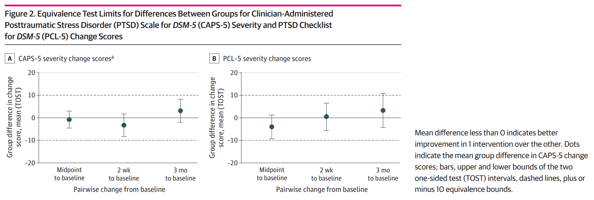

![]()
Citation
Zaccari, B., Higgins, M., Haywood, T. N., Patel, M., Emerson, D., Hubbard, K., Loftis, J. M., & Kelly, U. A. (2023). “Yoga vs Cognitive Processing Therapy for Military Sexual Trauma–Related Posttraumatic Stress Disorder”. In JAMA Network Open (Vol. 6, Issue 12, p. e2344862). American Medical Association (AMA). https://doi.org/10.1001/jamanetworkopen.2023.44862
Visual Abstract
{kind=link}
Featured Figure

Key Points
Question
What is the effectiveness of Trauma Center Trauma-Sensitive Yoga (TCTSY) compared with first-line cognitive processing therapy (CPT) for posttraumatic stress disorder (PTSD) related to military sexual trauma in women veterans?
Findings
In this randomized clinical trial of 131 women veterans with PTSD who use US Department of Veterans Affairs health care, TCTSY had large within-group effect sizes, equivalent effectiveness to CPT, and a 42.6% higher treatment completion rate than CPT.
Meaning
The findings demonstrate that TCTSY is a cost-effective means to expand Veterans Affairs PTSD treatment options; increase access to acceptable, patient-driven, and effective PTSD treatment for women veterans; and provide a treatment option that could improve associated symptoms (eg, depression, anxiety).
Abstract
Importance
First-line treatment for posttraumatic stress disorder (PTSD) in the US Department of Veterans Affairs (VA), ie, trauma-focused therapy, while effective, is limited by low treatment initiation, high dropout, and high treatment refraction.
Objective
To evaluate the effectiveness of Trauma Center Trauma-Sensitive Yoga (TCTSY) vs first-line cognitive processing therapy (CPT) in women veterans with PTSD related to military sexual trauma (MST) and the hypothesis that PTSD outcomes would differ between the interventions.
Design, Setting, and Participants
This multisite randomized clinical trial was conducted from December 1, 2015, to April 30, 2022, within 2 VA health care systems located in the southeast and northwest. Women veterans aged 22 to 71 years with MST-related PTSD were enrolled and randomized to TCTSY or CPT.
Interventions
The TCTSY intervention (Hatha-style yoga focusing on interoception and empowerment) consisted of 10 weekly, 60-minute group sessions, and the CPT intervention (cognitive-based therapy targeting modification of negative posttraumatic thoughts) consisted of 12 weekly, 90-minute group sessions.
Main Outcome and Measures
Sociodemographic data were collected via self-report survey. The primary outcome, PTSD symptom severity, was assessed using the Clinician-Administered PTSD Scale for DSM-5 (CAPS-5) and PTSD Checklist for DSM-5 (PCL-5). Assessments were conducted at baseline, midintervention, 2 weeks post intervention, and 3 months post intervention.
Results
Of 200 women veterans who consented to participate, the intent-to-treat sample comprised 131 participants (mean [SD] age, 48.2 [11.2] years), with 72 randomized to TCTSY and 59 randomized to CPT. Treatment was completed by 47 participants (65.3%) in the TCTSY group and 27 (45.8%) in the CPT group, a 42.6% higher treatment completion rate in the TCTSY group (P = .03). Both treatment groups improved over time on the CAPS-5 (mean [SD] scores at baseline: 36.73 [8.79] for TCTSY and 35.52 [7.49] for CPT; mean [SD] scores at 3 months: 24.03 [11.55] for TCTSY and 22.15 [13.56]) and the PCL-5 (mean [SD] scores at baseline: 49.62 [12.19] for TCTSY and 48.69 [13.62] for CPT; mean [SD] scores at 3 months: 36.97 [17.74] for TCTSY and 31.76 [12.47]) (P < .001 for time effects). None of the group effects or group-by-time effects were significant. Equivalence analyses of change scores were not significantly different between the TCTSY and CPT groups, and the two one-sided test intervals fell within the equivalence bounds of plus or minus 10 for CAPS-5 for all follow-up time points.
Conclusions and Relevance
In this comparative effectiveness randomized clinical trial, TCTSY was equivalent to CPT in reducing PTSD symptom severity, with both groups improving significantly. The higher treatment completion rate for TCTSY indicates its higher acceptability as an effective and acceptable PTSD treatment for women veterans with PTSD related to MST that could address current VA PTSD treatment limitations.
Trial Registration
ClinicalTrials.gov Identifier: NCT02640690